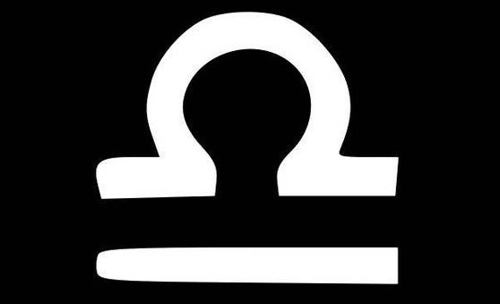
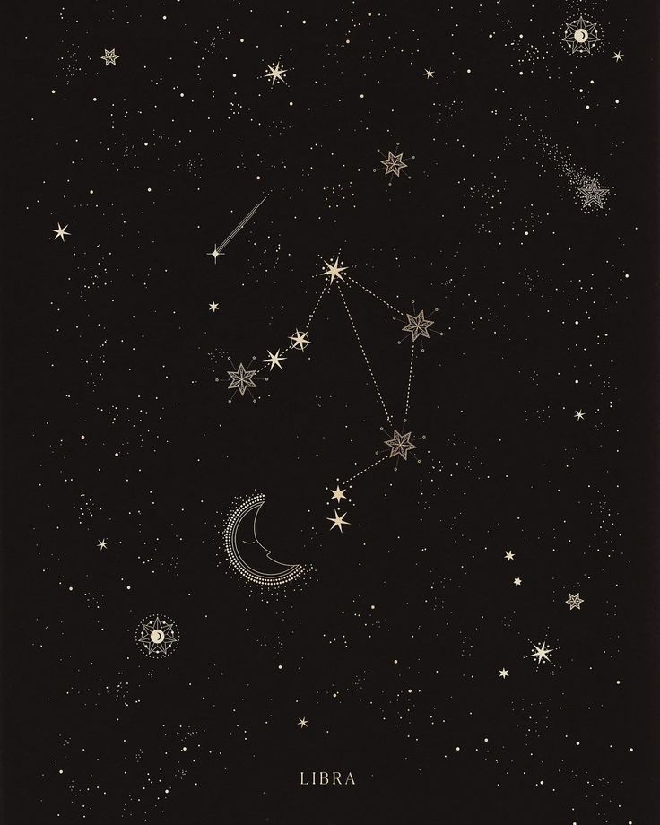

your sun is in...
libra

"The Scale"

Characteristics of a Libra:
* fair
* lovable
* indecisive
* sincere
* gracious
* peaceful
* selfless
* fair
* lovable
* indecisive
* sincere
* gracious
* peaceful
* selfless
Sun Signs
Just as the sun is the center point of our solar system, the sun signs represent the center aspects of a person. Your sun sign is one of twelve zodiacs that is based on the position of the Earth in relation to the sun on the day you were born. Because the sun has the strongest pull on the earth, sun signs influence people the most. Therefore, your sun sign can tell you the core characteristics of who you are and how you express yourself to the world.
Element - Air
Each sign is represented by one of four elements: Fire, Earth, Air, or Water. The elements represent a ruling quality that the three signs within this element all share.
Libra Celebrities
Bruce Springsteen - The Boss
Born: September 23rd, 1949
Olivia Newton John
Born: September 26th, 1948

Will Smith
Born: September 25th, 1968
Bruno Mars
Born: October 8th, 1985
Cardi B
Born: October 11th, 1992
Kim Kardashian
Born: October 21st, 1980
Ruling Planet:

Venus rules love, balance, and beauty
The ruling planet of a sign determines many of its associated character traits. Venus is the planet of love and balance, and this greatly impacts Libra's strong concern for fairness and peace. Their ruling influences of love and beauty draw on their hopeless romantic side, which not only makes them very loving, but they also appear as very worthy of love. Their need for harmony in all aspects of life make them great partners, peacemakers, and often very progressive thinkers. However, this also makes them very anti-confrontational, and causes them to have a degree of self-pity or an inability to stand up for themselves.
The Sign's Quality:
A sign's quality correlates strongly to their relation to the seasons. The cardinal signs all mark the start of the seasons; because of this, they are often referred to as reacting signs. As a reacting sign, libras are often known as the peacemakers, using their venus influences of love and balance to become a gracious compromiser in any situation of disparity. As their sign represents the start of fall, Libras have a quality of indecisivness and uncertainty regarding changes. However, this doesn't necessarily mean they carry a dislike for change, as their air sign qualities lead to a pursual for personal growth and brighter futures.
Cardinal
libras are falsely stereotyped as
submissive
when in reality they are fair and harmonious
Most Compatible With:
listen to your daily horoscope on spotify